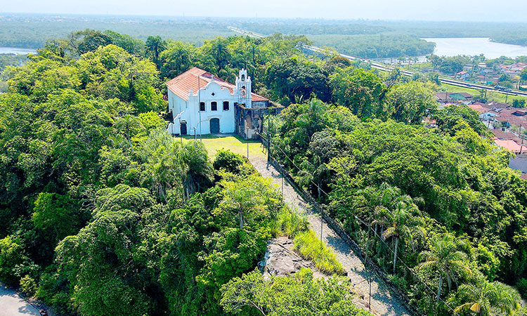
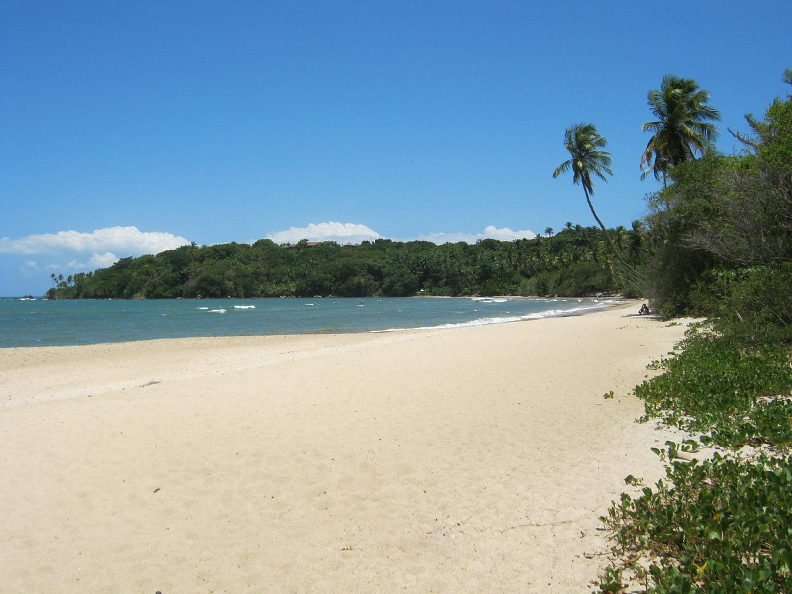

História
Origem e Período Colonial
A história da região começa muito antes da colonização, com forte presença indígena. Originalmente habitada por povos da cultura tupi-guarani, a área abriga sítios arqueológicos mapeados recentemente pela USP, confirmados como ocupação pré-colonial.
Fundação e Estratégia: O crescimento inicial girou em torno do Convento de Nossa Senhora da Conceição, fundado no mesmo ano da vila e hoje tombado pelo Iphan. A segurança da costa também motivou a construção de fortificações e o uso de pontos elevados, como o Morro do Paranambuco, que serviam tanto para defesa quanto para observação do estuário.
Desenvolvimento da cidade
O crescimento efetivo misturou a consolidação religiosa com o potencial natural da região, transformando-a em polo de atração ao longo dos séculos.
A Bacia Hidrográfica: Itanhaém possui a segunda maior bacia hidrográfica de São Paulo, com 2 mil quilômetros de rios, sendo 180 navegáveis. O encontro dos rios Preto e Branco, formando o Rio Itanhaém (conhecido como "Amazônia Paulista"), definiu a geografia e a economia local desde o início.
Consolidação Urbana: A cidade se expandiu ao redor da Igreja Matriz de Sant'Anna, construída entre 1642 e 1679 na Praça Narciso de Andrade, que se tornou o coração social e religioso. No século XX, as praias como a dos Sonhos e a Prainha começaram a atrair veranistas, iniciando a transição de vila histórica para destino turístico.
Cultura e Lenda: A ligação com a figura de José de Anchieta solidificou a identidade local. A Cama de Anchieta, uma formação rochosa onde lendas dizem que o padre descansava, e a Gruta de Nossa Senhora de Lurdes tornaram-se pontos centrais de visitação e fé, atraindo turistas além dos moradores locais.
Emacipação e Consolidação
Itanhaém manteve sua autonomia política desde os primórdios da colonização, mas enfrentou desafios de preservação e crescimento desordenado na era moderna.
Autonomia Histórica: Por ter sido fundada como vila em 1532, Itanhaém não passou por um processo de emancipação no século XX como suas vizinhas; sua luta histórica foi pela manutenção de seu patrimônio frente ao crescimento turístico.
Turismo e Pressão Urbana: Hoje, com 120 mil habitantes, a cidade recebe mais de 400 mil turistas anualmente na alta temporada (dezembro a fevereiro), o que exige um equilíbrio constante entre a preservação de sítios históricos e a demanda por infraestrutura.
Pontos Turísticos de Itanhaém
Convento de Nossa Senhora da Conceição: Fundado em 1532, mesmo ano da vila, é o coração histórico da cidade. Tombado pelo Iphan, o local foi ponto de apoio para jesuítas como José de Anchieta. A arquitetura colonial e a posição elevada sobre a foz do rio oferecem não só uma aula de história, mas uma das vistas mais estratégicas do litoral paulista, onde se entende por que a região foi crucial para a defesa da capitania.

Boca da Barra: Não é apenas uma praia, é um fenômeno geográfico. É o encontro turbulento das águas do Rio Itanhaém (formado pela união dos rios Preto e Branco) com o oceano Atlântico. O local é famoso pelas ondas desafiadoras e pela paisagem única onde a água doce e salgada se misturam, criando um ecossistema complexo que atrai pescadores e surfistas experientes.

Ilha das Cabras: Uma ilhota rochosa acessível apenas a pé durante a maré baixa. O destaque não é o que há na ilha em si, mas a travessia e as formações rochosas ao redor. É um ponto de observação da fauna marinha e cenário frequente para fotos, mas exige atenção: as rochas podem atingir temperaturas extremas sob o sol, causando queimaduras em quem caminha descalço ou sem proteção adequada.

Curiosidades
O Monumento "Mulheres de Areia": A cidade eternizou a novela global de 1974 com uma estátua na areia. A obra original foi criada em 1975 por Serafim Gonzales, que também atuou na trama. Devido à degradação natural pelo tempo e maresia, a escultura foi substituída em 2014 por uma réplica em fibra de vidro feita por Daniel Gonzalez, filho do autor original, mantendo o símbolo vivo no calçadão.
A "Amazônia Paulista": Itanhaém detém a segunda maior bacia hidrográfica do estado de São Paulo. São 2 mil quilômetros de rios, dos quais 180 são navegáveis. Essa densidade de águas interiores é tão significativa que a região recebe esse apelido, diferenciando-a drastically de outros destinos de litoral que dependem apenas do mar para o turismo e transporte.